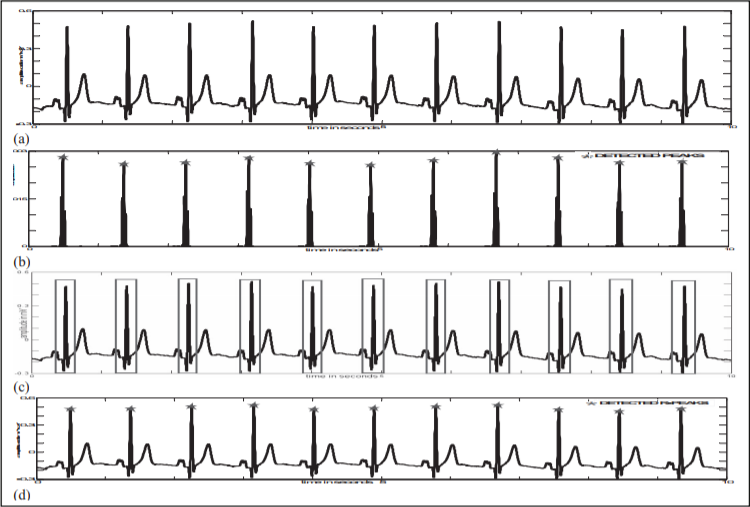

2. Methodology
2.1. Smoothing and filtering of raw data
The derivative based approach amplifies the high frequency noises, which leads to high difference signals due to noise. So, initial smoothing and filtering of the ECG data is done to eliminate power frequencies and high frequency noise in the ECG.
2.2. Detection of QRS Regions
Owing to the high frequency content of the QRS region [5-15 Hz] the derivative of these regions of ECG have higher
amplitudes. As the sampling instants of digital ECG data remains constant the amplitude differences are proportional
to the derivatives which can be used to detect the QRS regions. Double differencing and squaring intensifies the
magnitudes of the difference signal in the QRS regions which aids in the localisation of the QRS regions.The process involves the following steps
i. From the ECG data array e (n) the squared double differences are calculated at all points to yield the
difference array d (j).
ii. The difference array is sorted in descending order of magnitude and the difference peaks above a constant
threshold value of 3% of the maximum are selected.
iii. Since the maximum duration of the QRS regions is 150 ms, to eliminate possibility of detection of several
peaks in the same QRS region all the difference peaks within an interval of ±75 ms of each selected
difference peaks are eliminated.
iv. The QRS regions are identified to be within a window of ± 75 ms of each selected peaks on the ECG data
array as shown in Fig 2 (c).
2.3 Detection of R peaks
The R peaks are the positive peaks of the QRS regions. These are detected by relative magnitude comparison in each QRS regions. A search for maximum was done on the relative magnitudes for each window to eliminate errors due to baseline wander.
i. For each detected QRS window the maximum and minimum amplitude values of the ECG data array are
calculated.
ii. The mean of the maximum and minimum values are subtracted from all data points of that window to get the relative magnitudes.
iii. The position of the maximum of the relative magnitudes is the R point locations of the corresponding QRS window. The absolute maximum value of the QRS window is not selected as the R-point location to
eliminate possibility of detection of the S point
2.4 Processing of RR intervals
The R peaks thus obtained may not be accurate. There can be missed peaks or false detections. To ensure detection
accuracy the RR intervals are processed according to certain criteria
i. It is considered that the minimum difference between two successive R peaks can be 200 ms. Any peaks
detected within 200 ms of the first is considered as noise peak and eliminated
ii. The average RR interval for 5 successive R peaks, two on either side of the R peak corresponding to the
highest difference peak is calculated and taken as reference for the RR interval processing.
iii. All the successive RR intervals are processed by comparing with the calculated average RR interval.
CASE 1- If the RR interval between any two detected peaks is less than 70% of the average RR interval then
the 2nd peak is eliminated.
CASE 2- If the RR interval between any two detected peaks is more than 180% of the average interval then
a search for another R peak in that interval is initiated with decreased threshold for the difference
signal.
